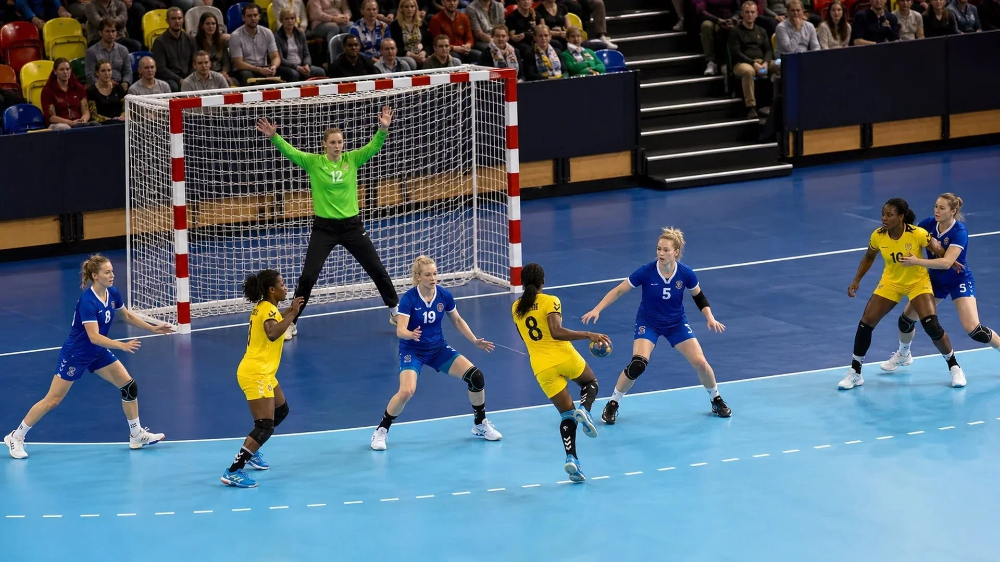

Modalidade esportiva
Handebol
O handebol moderno tomou forma na Europa entre o fim do século XIX e o início do século XX. Suas regras foram organizadas na Alemanha, e a modalidade estreou nos Jogos Olímpicos em 1936, inicialmente na versão disputada ao ar livre.